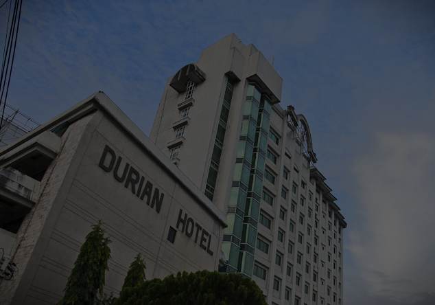

Old abandoned house in Brgy. Simsimon, Mati

Last on the list is not a widely known destination as the other places mentioned above but is known to hold numerous creepy stories and encounters from locals. A former resident of the old abandoned mansion in Brgy. Simsimon said that this house is one of the oldest abandoned houses in Brgy. Simsimon. They experienced several paranormal happenings in the house such as hearing someone walking around, stairs suddenly creaking, and children noisily playing. Another rumor was that the home had a portrait of a mother carrying a child suddenly crying blood as the image of the child turned into a tiyanak. The house has had different owners over time, but apparently, the reason for these supernatural occurrences was due to the fact that the original owner’s father instructed them to bring along his remains wherever they went. Since they left his remains at the house, this has caused him unrest.
Durian Hotel — Bajada, Davao City
At the heart of Davao City stands an unoccupied, 12-storey hotel that has been the subject of ghost stories and rumors. The Durian Hotel ceased operations in 2001 upon facing foreclosure due to unsettled transactions; this was a time when Mindanao was facing a great economic crisis and armed conflict. It’s an infamous rumor in Davao that the hotel might have become haunted due to its long abandonment. Eyewitnesses have shared that the hotel’s elevator—which is visible from the main highway—habitually runs on its own at dawn. Local news even featured the haunted elevator in action years back.